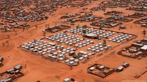
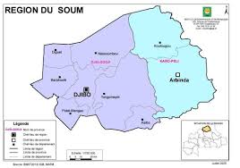
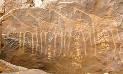
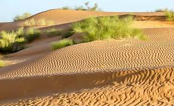
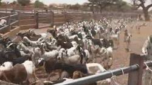
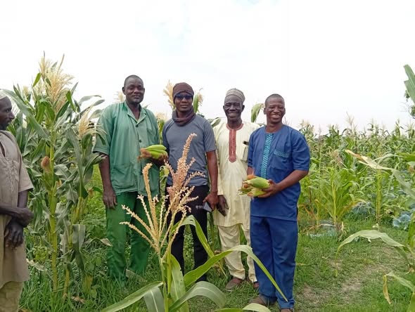
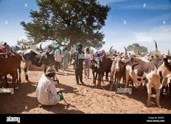

« Située dans le nord du Burkina Faso»
Pays : Burkina Faso
Statut : Région
Provinces : 2
Chef-lieu : Djibo
5ème RGP: 363 661 habitant
Densité : 32,9 habitants / km²
Superficie : 12 205 km²

Présentation
La région du Soum est l'une des 17 régions administratives du Burkina Faso, créée par la réorganisation du 2 juillet 2025. Chef-lieu Djibo, cette entité sahélienne couvre des zones réaménagées du nord du pays, comprenant notamment les provinces du Djelgodji et du Zondoma

Tourisme & Culture
La province du Soum (devenue Djelgodji après la réforme territoriale de juillet 2025), située dans la région du Sahel au Burkina Faso, est une zone riche en potentiel touristique et culturel, marquée par des paysages sahéliens, un patrimoine archéologique ancien et une forte tradition pastorale. Djibo en est le chef-lieu
Gravures rupestres de Pobé-Mengao : Sites archéologiques majeurs témoignant de l'occupation ancienne de la région.

paysages sahéliens

Ressources naturelles
Le sous-sol de la region de Soum recèle d'importantes réserves aurifères, exploitées essentiellement par l'orpaillage artisanal traditionnel. Sur le plan patrimonial, la région conserve l'un des plus riches héritages archéologiques du pays avec les gravures rupestres millénaires de Pobé-Mengao et d'Arbinda, ainsi qu'un tissu culturel vivant maintenu par le savoir-faire endogène de ses artisans du cuir, potiers et vanniers
Potentiel agricole 🌾


Potentiel éducatif 🏫
Le potentiel éducatif du Soum repose sur un réseau d'écoles primaires et de lycées engagés à offrir une formation de qualité adaptée aux réalités locales. Du primaire au secondaire, ces établissements se distinguent par un encadrement pédagogique rigoureux
Potentiel commercial 🛒

Le potentiel commercial du Soum repose principalement sur l'élevage et ses circuits d'échanges dynamiques centrés autour de son chef-lieu. Selon les données de la Monographie socio-foncière de la province du Soum, le réseau commercial s'articule autour de grands marchés hebdomadaires comme ceux de Djibo, Pétégoli, Koutougou et Arbinda, qui attirent régulièrement des acheteurs venus de Ouagadougou, Kaya ou Ouahigouya. Les rapports techniques de la FAO et du réseau FEWS NET soulignent que le marché à bétail de Djibo est l'un des carrefours d’exportation majeurs de la sous-région pour les bovins et les petits ruminants. Ce dynamisme est renforcé par les flux transfrontaliers, le commerce de produits artisanaux manufacturés (maroquinerie et vannerie) et, comme le rapporte l'Agence Information du Burkina (AIB), par une production maraîchère locale en pleine relance qui approvisionne les circuits de consommation provinciaux
Carte de situation